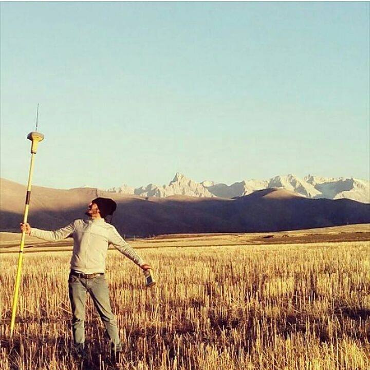
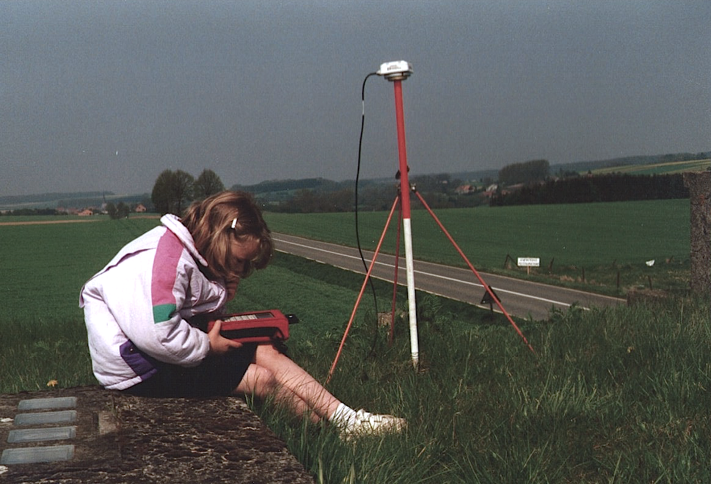

Land Surveyors United
The best way to insure that there is a bright future for the Land Surveying Profession is to UNITE and educate the next generation. It is up to us!Land Surveyors United
The best way to insure that there is a bright future for the Land Surveying Profession is to UNITE and educate the next generation. It is up to us!
The Oldest Profession
We may be the oldest profession known to man, but as a whole, we have a lot of uncertainties ahead of us. Together, we are learning to communicate and share our expertise for the benefit of all.Start Inspiring The Next Generation
As a global community of Land Surveyors at all levels of experience and expertise, together we are learning to bridge the knowledge gaps and generational differences which have held us back for so long.
Land Surveying is Exciting
However, the public needs to see the importance of Land Surveyors to society and this needs to begin at an early age. Take every opportunity you can to get kids into surveying.Celebrate Surveying History
Land surveys and land mapping are an integral part of the city you live in, even if you aren’t entirely aware of it. Surveying has been used for centuries in a host of important construction, engineering, and mapping projects. Do you know where surveying originated? Let's talk about it!